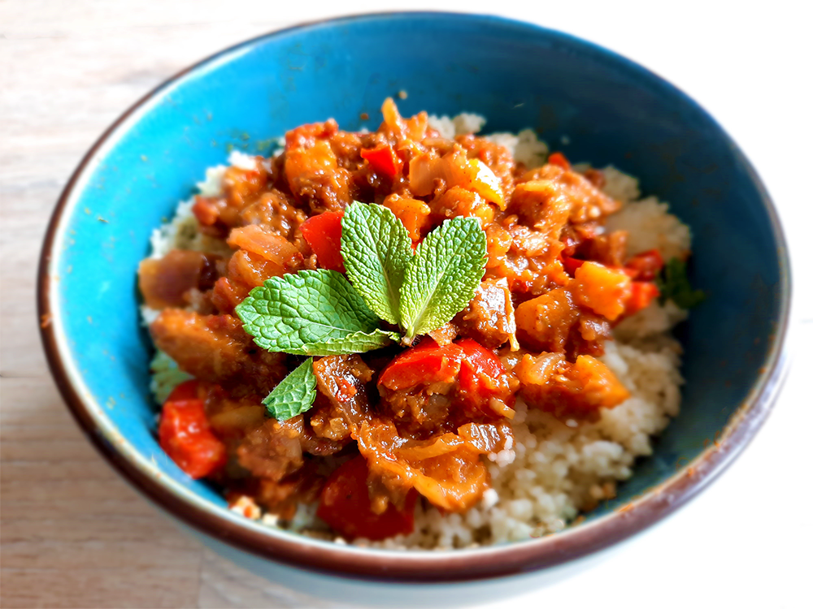

coq au vin

griekse vega gyros wraps

kip in de hoed

avocado salade

dadels met spek en kaas

roze ontbijtbowl

biefstuk met chimichurri & gegrilde groenten

bami met spinazie

japanse beef teriyaki

amerikaanse caesar salade

italiaanse caponata

chili sin carne met guacamole

marokkaanse tajine
Voor dit heerlijke gerecht kun je ook honing gebruiken in plaats van agavesiroop. Het is dan alleen niet veganistisch. Voor de vleesvariant kun je het beste kipdijfilet gebruiken.

Bereidingsduur: 90 minuten
Aantal personen: 3
Ingrediënten:
350 gram (vegetarische) kipstukjes
200 gram couscous
150 gram abrikozen (geweld)
125 gram dadels
1 paprika
1 tomaat
1 ui
1 teentje knoflook
1 blokje groentebouillon
2 eetlepels harissa
3 eetlepels komijn
1 theelepel kaneel
2 eetlepels ras el hanout
1 eetlepel agavesiroop
enkele takjes munt
350 gram (vegetarische) kipstukjes
200 gram couscous
150 gram abrikozen (geweld)
125 gram dadels
1 paprika
1 tomaat
1 ui
1 teentje knoflook
1 blokje groentebouillon
2 eetlepels harissa
3 eetlepels komijn
1 theelepel kaneel
2 eetlepels ras el hanout
1 eetlepel agavesiroop
enkele takjes munt
Instructies:
1. Snijd de kip in blokjes en bestrooi met peper en een beetje komijn. Snijd ondertussen de ui in ringen en de paprika en tomaat in blokjes. Pers de knoflook uit.
2. Bak de kipstukjes in een stoofpan, braadpan of tajine tot deze rondom bruin is en haal uit de pan.
3. Laat de ui en knoflook in de pan 5 minuutjes fruiten. Voeg vervolgens de harissa, tomaat, paprika, het bouillonblokje, agavesiroop of honing, kaneel, komijn, ras el hanout en 500 milliliter water toe. Roer goed en voeg nu de kip weer toe. Laat dit een halfuurtje (met deksel) stoven, eventueel met een warmhoudplaatje.
4. Snijd de abrikozen en dadels door de helft of nog kleiner indien gewenst en voeg deze na het halfuurtje stoven toe. Laat dit zonder deksel nog 30 minuten sudderen zodat het overtollige water wat meer verdampt.
5. Maak de couscous klaar volgens de verpakking en voeg indien gewenst nog wat ras el hanout toe. Zorg ervoor dat de couscous niet te nat is.
6. Bestrooi de tajine met versnipperde blaadjes munt.
1. Snijd de kip in blokjes en bestrooi met peper en een beetje komijn. Snijd ondertussen de ui in ringen en de paprika en tomaat in blokjes. Pers de knoflook uit.
2. Bak de kipstukjes in een stoofpan, braadpan of tajine tot deze rondom bruin is en haal uit de pan.
3. Laat de ui en knoflook in de pan 5 minuutjes fruiten. Voeg vervolgens de harissa, tomaat, paprika, het bouillonblokje, agavesiroop of honing, kaneel, komijn, ras el hanout en 500 milliliter water toe. Roer goed en voeg nu de kip weer toe. Laat dit een halfuurtje (met deksel) stoven, eventueel met een warmhoudplaatje.
4. Snijd de abrikozen en dadels door de helft of nog kleiner indien gewenst en voeg deze na het halfuurtje stoven toe. Laat dit zonder deksel nog 30 minuten sudderen zodat het overtollige water wat meer verdampt.
5. Maak de couscous klaar volgens de verpakking en voeg indien gewenst nog wat ras el hanout toe. Zorg ervoor dat de couscous niet te nat is.
6. Bestrooi de tajine met versnipperde blaadjes munt.